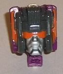
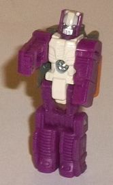
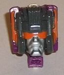
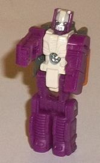
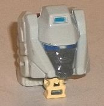
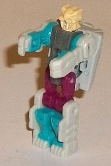
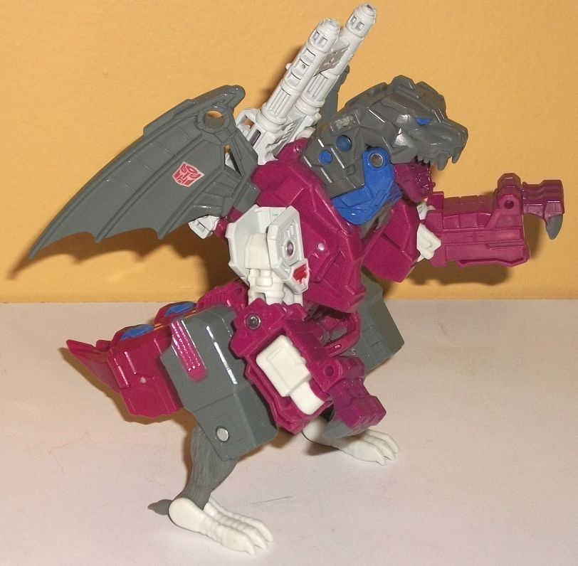
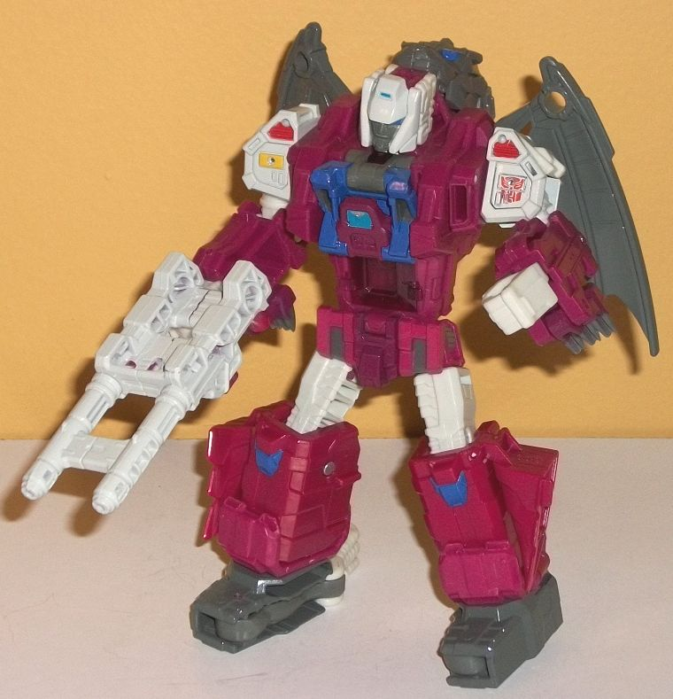

 
Allegiance : Decepticon
Size : Titan Master
Difficulty of Transformation : Very Easy
Color Scheme : Moderately dark purple, bone white, dark glossy gray, and some silver and orange
Individual Rating : 4.5
Price: $25 (U.S.)
(NOTE: Because this is a repaint, this is not a full-blown review. This mainly covers any changes made to the mold and the color scheme, and merely compares it to Titans Return Twinferno w/ Daburu. For a review on the mold itself, read the review of Titans Return Twinferno w/ Daburu here .)
 Scorponok
(Titan Master)
Scorponok
(Titan Master)


Allegiance
: Decepticon
Size
: Titan Master
Difficulty of Transformation
: Very
Easy
Color Scheme
: Moderately dark purple,
bone white, dark glossy gray, and some silver and orange
Individual Rating
: 4.5
Scorponok is the "bonus Titan Master" for this little set, and out of all the "extra" Titan Masters, this guy definitely makes the most sense-- I imagine Hasbro originally wanted to make him the 2nd Titan-class toy in Titans Return, but he was out-voted by Trypticon instead, so they just made Scorpy a little Titan Master. Anyways, in robot mode Scorponok shares the same body and details as Titan Master Ultra Magnus -- no original details here. The legs and arms are a moderately dark purple that's pretty spot-on for Scorponok's G1 color, while the main body and forehead are painted bone white. The eyes and knight-like faceplate are painted silver. It's a decent color combo, and calls back to G1 Scorponok's Headmaster Zarak, even if mold-wise there aren't many details the two share. As with the other "bonus" Titan Masters, the new face for the head mode is diecast. As you'd expect, the new face is a pretty close representation of G1 Scorponok's head, with side antennae, a very square head (which of course fits the Titan Master gimmick nicely), several lines down his forehead, a visor, and a "normal" nose and mouth. Most of his head is painted a dark, glossy gray, the face is painted silver, and the visor and antennae are painted orange-- a fairly nice color combo, overall. From the side you can see the arms and legs of the Titan Master giving some purplish bulk to the back end, but honestly this was kinda how G1 Scorponok's head was too, so I don't really mind it here as much as on most Titan Master head modes.
 Grotusque
w/ Fengul
Grotusque
w/ Fengul


Allegiances
: Autobot
Size
: Deluxe
Difficulty of Transformation
: Medium
Color Scheme
: Gray, dull fuchsia,
dull pinkish purple, off-white, and some dark periwinkle, light aquamarine,
pale orangish yellow, red, and transparent reddish purple
Individual Rating
: 8.8


Fengul, surprisngly,
has a new head mold for BOTH of his heads. In Titan Master mode, he has
a new head with longer fangs and a puddy-tat-like face. His head is painted
a pale orange-yellow (except for his teeth), while the inner portions of
his arms and legs are painted aquamarine. This latter color works quite
well with both the off-white plastic on his arms and lower legs, as well
as the dull fuchsia plastic used for his upper legs. He's also got some
neutral gray plastic for the main body. So why the new headsculpt and rather
funky body? Well, just as Twinferno's Titan Master was based off a Battle
Beast called White Lion, this guy's based off another Battle Beast called
Platinum Tiger. So kudos to Hasbro for continuing that line of homages
with the Monsterbots! In head mode, of course the face has been redone
to match Grotusque's robot head, with a sloping forehead with a small indentation
near the top, large "chin guards" on the sides, and a fairly "normal" face
with two eyes. The face is painted gray, while the eyes are painted dark
periwinkle and the forehead indentation light aquamarine. I wish the face
colors were a bit lighter, but otherwise they contrast fairly well with
the off-white on the head's "helmet". And, since the rest of the head behind
the face is also off-white, no mis-matching colors here.
Grotusque here uses
Twinferno's mold, but has an impressive amount remolded. The arms are COMPLETELY
different, being much larger and having three substantial molded-together
claws in beast mode. They're pretty solid-looking arms, but there's little
panels visible in beast mode that just kinda hang there to the side of
the arms, though at least they're small. The robot fists are also pretty
blatant on the sides of the arms, given their differing color. There's
also quite a lot of mechanical bits and details on the shoulders, as well.
There's also a completely new head, revealing a fanged gargoyle-like monster
head, which is impressively well-detailed mold-wise, with lots of armored
plates around the neck and a sloped face with a fanged, cat-like mouth.
The chest has also been remolded, as the arms no longer flip out and around
the chest. Instead, some fairly basic mechanical details have ben molded
onto the sides-- mostly some decorative diagonal lines 'n such. The cockpit
is still in the center of the body, for Fengul to sit in in Grotusque's
beast mode. The only robot mode-specific remold (beyond the new headsculpt
for Fengul, of course) is the new crotchplate, which has more rectangular
details on it compared to Twinferno's, and looks less flat overall as well.
The transformation for the legs is the same as Twinferno's, given that
nothing has changed down there, but the upper robot mode transformation
is definitely more simple. The beast head splits in two, with the jaw and
lower portion folding out in front of the chest, while the upper and back
portion of the head folds behind the upper back-- though it still does
stick out a bit, but I actually kinda like Grotusque's beast head peeking
out a bit from back there. The arms basically turn upside down at the shoulders
and the claws are switched out with robot hands-- not that complicated.
The end result looks pretty good, with a more detailed, substantial-looking
chest compared to Twinferno, and some solid arms with actual fists this
time. The beast claws hang off the bottom, but they're not huge issues.
The color scheme for Grotusque is pretty great-- you can definitely tell
this was a late '80s bot. He's mostly a mix of dull fuchsia and dull pinkish
purple, with his body and arms more towards the fuchsia end and the legs/lower
beast body more towards the pinkish purple end. Comibned with the off-white
on his upper legs, shoulders, head, and fists, it makes for a pretty nice
basic color scheme. The gray on the feet, wings, and head helps sell the
"gargoyle" aspect of Grotusque, even though I wish it was a tad lighter.
There's also some transparent reddish purple used for the cockpit window,
which of course fits well with the fuchsia and pink-purple. The perwinkle
accents on the robot knee and chest, as well as on the beast head and eyes,
really works well, especially against the fuchsia. Some red is also present
on his shoulders. Finally, there's a bit of pale orangish yellow on his
right shoulder, though it's replaced on his left shoulder with a painted-on
Autobot symbol. Although nice accents, neither of these last two colors
are present enough to really add much to the color scheme overall. Beyond
having a good color scheme, simply having so many paint apps spread across
so much of Grotusque-- the chest, heads, shoulders, waist, and the off-white
paint on the guns-- really helps make him visually interesting in both
modes. His legs or wings could've used a titch more paint, but that's being
picky; he still looks great as-is. (FYI, the additional articulation because
of the remolded parts is limited to the arms-- in robot mode, he can move
them at the shoulders (at two points), elbows (at two points), and inwards
slightly at the wrists; in beast mode, he can move them at the shoulders
(at two points), elbows (at two points), and up-and-down at the claws (each
claw-hand as one piece).
Grotusque w/ Fengul is
a great remold, looking pretty solid in both modes and really making him
feel unique from Twinferno with the new upper body, even if the transformation
for said upper body is a bit simpler. The color scheme is what really steps
him up fron Twinferno, with a great off-white/gray/fuchsia color combo
with alot of highlighting paint apps. Fengul is also a great, colorful
little Battle Beasts homage, and Scorponok is a nifty little extra since
the guy didn't get a full-fledged toy in Titans Return. My favorite of
the three Titans Return Monsterbots, no question.
Reviews by Beastbot